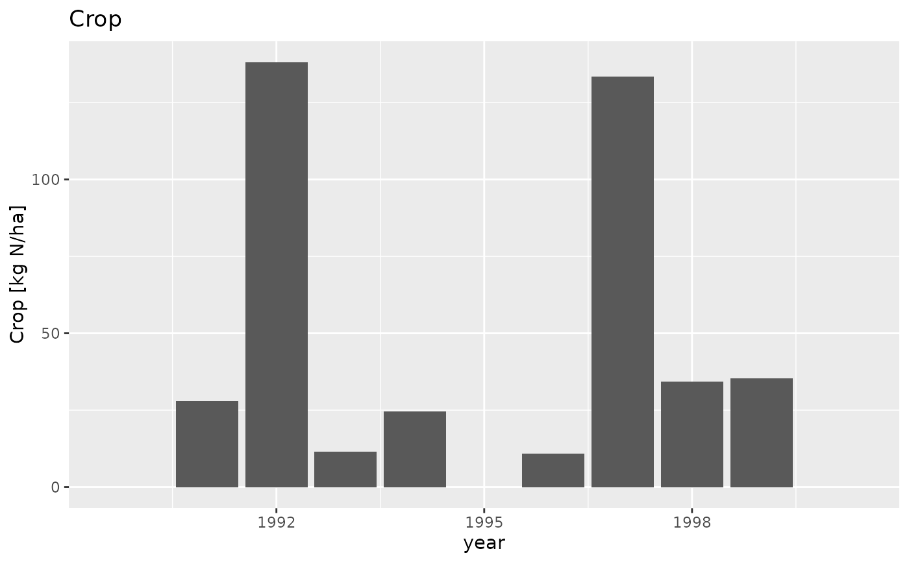

Plot one or more variables from one or more Dlfs. Each variable is plotted in a separate subplot.
plot_dlf.RdPlot one or more variables from one or more Dlfs. Each variable is plotted in a separate subplot.
Arguments
- dlfs
Either a list of Dlf or a single Dlf. If a list with of components, the names are used for the legend.
- x_var
Name of variable for x axis
- y_vars
Either a list of variables to plot, or a single variable
- type
Either a string defining the type of plot to produce OR a single parameter function returning a ggplot2 object.
If a string, the the following types are supported * "bar" * "points" * "lines" Types cannot be abbreviated, but they can be combined as in type="barpoints" The types can be separated by a non-type string for readability as in type="bar + lines + points"
If a function, then it is passed a ggplot2 object and it should add a geom to the object and return it. For example, type=function(gg) gg + geom_point()
- title_suffix
A string that is appended to the title of all subplots
- group_col
Name of column to use for grouping. If not NULL then Dlfs must be a single Dlf object, not a list
Value
A ggplot2 object. If y_vars is a single variable then the plot can be themed and further data added. If y_vars is a list of more than on variable, it is not possible to add further data to it.
Examples
data_dir <- system.file("extdata", package="daisyrVis")
path <- file.path(data_dir, "annual/Annual-FN/HourlyP-Annual-FN-2-2b.dlf")
dlf <- read_dlf(path)
# Plot using a string for type
plot_dlf(dlf, "year", "Crop", "bar")
#> NULL
#> [[1]]

#>
# Same plot with a function for type
geom <- function(gg) { gg + ggplot2::geom_col(position="dodge") }
plot_dlf(dlf, "year", "Crop", geom)
#> NULL
#> Error in geom(gg): could not find function "geom"